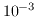
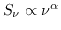

Next: Smoothing Images Up: Image Analysis Previous: Copying, Reordering and Regridding
The task maths evaluates a mathematical expression at each pixel of a set of input images. The expression (given by the exp keyword) is given in a FORTRAN-like syntax, using all the normal FORTRAN operators, real-valued functions (using the FORTRAN generic, rather than specific, names), brackets and real constants. Logical operators are also handled with a number zero or less being .FALSE., and a positive number being interpreted as .TRUE. (the results of a logical expression are always zero or one). Dataset names take the place of FORTRAN variables, and the expression is each pixel of the input images. For example, maths can evaluate expressions such as
exp=sqrt(vela.qmap**2+vela.umap**2)
This will cause maths
to take the squares of the pixels in vela.qmap and vela.umap, add them, and then take the square root.
Note that when there are multiple input datasets, maths insists that they are exactly the same size. However it does not check whether they align, or indeed whether they use the same axis system. Task maths does not check coordinate types.
There are some restrictions on dataset names, however. To start with,
maths
treats the names x, y and z as special
(see below). Also there are some
inherent ambiguities. For
example, maths
will think 1934-638 is a subtraction of two
integers (not a dataset named after a source). Avoid dataset names which
start with numerics, or those containing special characters (e.g. plus
and minus signs). Also avoid extensions like .not (there are situations
where this can introduce ambiguities). If you follow the normal FORTRAN
or C rules for variable names, ambiguities will not arise. If you insist on
using names which could be ambiguous, you can bracket them inside angular
braces. For example, maths
will interpret <1934-638> as a dataset
1934-638 (not a subtraction operation).
Another useful (or indeed needed) keyword is mask. This gives a second expression (generally a logical expression) indicating where the expression given by exp is to be evaluated. For example,
exp=sqrt(vela.imap)
mask=vela.imap.gt.1e-3
indicates to take the square root of an image only when the image
value is greater than . Note that maths
believes it is
your responsibility to protect against illegal mathematical operations
(square roots or logs of negative numbers, divide by zero, etc). You must
protect any potentially dangerous operations by appropriate masking.
As mentioned above, maths treats the names x, y and z in a special manner. They are taken to represent variables that vary linearly across the image, in the x, y and z directions respectively. The values that they take are set with the keywords xrange, yrange and zrange. Expressions can potentially be constructed with no input datasets. In this case, a image size needs to be given via the imsize keyword. For example, to generate a two dimensional Gaussian in the range [-2,2] on both the x and y axes, use
exp=exp(-(x**2+y**2))
xrange=-2,2
yrange=-2,2
imsize=128,128
The only remaining keywords are out (the output dataset) and region
(region-of-interest in the input datasets).
Here is a simple example of how to use maths to make a spectral-index image from two total intensity images. For example, consider two images (i1 and i2) at frequencies 4.8 and 8.4 GHz. You can compute the spectral-index image ( ) from
| MATHS | |
| exp=log(i1/i2)/log(4.8/8.4) | Divide log ratios |
| mask=(i1.gt.1e-4).and.(i2.gt.1e-4) | Blank below these values |
| region | Leave unset to do full image |
| out=4.8-8.4.spin | Output spectral index image |
| imsize | Leave unset |
| xrange | Leave unset |
| yrange | Leave unset |
| zrange | Leave unset |
In this example, we have computed the output image only when both the input image pixel intensities were above 0.1 mJy/beam (this might be 5-sigma or the like).
Alternatively, if you were very keen, you could also get maths to create an error image by inserting the appropriate expression (from propagation of errors). Then you could make the spectral index image and blank it according to the value of the error in the spectral-index image via the mask keyword.
Miriad manager